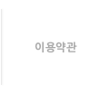
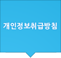

<!--%import("css/default.css")-->


<div class="divWrap">
	
	<div class="policy_title"></div>
	
	<div class="divTop">
		<div class="divMenuWrap">
			<a href="{getUrl('mid','clause')}"></a><a href="{getUrl('mid','privacy')}"></a>
		</div>
	</div>
	
	<div class="divMiddle">
		<div class="subTitle_privacy"></div>
		<div class="privacy">
		<textarea readonly="readonly">
1. 수집하는 개인 정보 항목 
회사는 최초 회원가입 및 원활한 고객 상담, 기타 각종 서비스 등 서비스 제공을 위한 필수정보를 수집하고 있습니다. 

가. 개인정보 항목 
- 필수항목 : 성명, 성별, 생년월일, 이메일, 연락처(일반전화 또는 휴대전화), 다만, 서비스 이용과정에서 서비스 이용기록, 접속 로그, 쿠키, 접속 IP 정보, 결제기록 등이 생성되어 수집될 수 있습니다. 
나. 수집방법 : 홈페이지(회원가입, 고객센터게시판) 및 고객센터를 통한 전화 및 온라인 상담 

2. 개인정보의 수집 및 이용목적 
회사는 수집된 회원님들의 개인정보를 다음의 목적을 위해 이용하고 있습니다. 
가. 서비스 제공에 관한 계약 이행 및 서비스 제공에 따른 요금정산 
콘텐츠 및 회원 맞춤형 서비스 제공, 서비스 구매 및 요금 결제, 금융거래 본인 인증 및 금융 서비스 
나. 회원 관리 
회원제 서비스 이용에 따른 본인확인, 개인 식별, 불량회원의 부정 이용 방지와 비인가 사용 방지, 가입 의사 확인, 가입 및 가입회수 제한을 위한 기록 보존, 불만처리 등 민원처리, 고지사항 전달 
다. 신규서비스 개발 • 마케팅 및 광고에 활용 
신규 서비스(컨텐츠) 개발 및 특화, 이벤트 등 광고성 정보 전달, 통계학적 특성에 따른 서비스 제공 및 광고 게재, 접속 빈도 파악, 회원의 서비스 이용에 대한 통계 

3. 개인정보의 보유 및 이용기간 
회사는 회원이 가입신청으로 가입한 날로부터 서비스를 제공하는 기간 동안에 한하여 이용자의 개인정보를 보유 및 이용하게 됩니다. 회원 탈퇴를 하거나, 개인정보의 수집 및 이용에 대한 동의를 철회하는 경우, 수집 및 이용목적이 달성되거나 보유 및 이용기간이 종료한 경우 해당 개인정보를 지체 없이 파기합니다. 이 경우 개인정보는 어떠한 용도로도 열람 또는 이용할 수 없도록 처리됩니다. 단, 다음의 정보에 대해서는 아래의 이유로 명시한 기간 동안 보존합니다. 
가. 상법 등 법령에 따라 보존할 필요성이 있는 경우 
-표시/광고에 관한 기록: 6개월 (전자상거래등에서의 소비자보호에 관한 법률) 
-계약 또는 청약철회 등에 관한 기록: 5년 (전자상거래등에서의 소비자보호에 관한 법률) 
-대금결제 및 재화 등의 공급에 관한 기록: 5년 (전자상거래등에서의 소비자보호에 관한 법률) 
-소비자의 불만 또는 분쟁처리에 관한 기록: 3년(전자상거래등에서의 소비자보호에 관한 법률) 
나. 기타, 회원님의 개별적인 동의가 있는 경우에는 개별 동의에 따른 기간까지 보관합니다. 

4. 개인정보의 파기절차 및 방법 
가. 파기절차 
회사는 개인정보 보유 및 이용기간에 명시한 기간이 경과한 경우 당해 개인정보를 지체 없이 파기합니다. 
나. 파기방법 
- 종이에 출력된 개인정보는 분쇄기로 분쇄하거나 소각을 통하여 파기합니다. 
- 전자적 파일형태로 저장된 개인정보는 기록을 재생할 수 없는 기술적 방법을 사용하여 삭제합니다. 

5. 개인정보의 제3자 제공 및 공유 
회사는 이용자의 개인정보를 원칙적으로 외부에 제공하지 않습니다. 다만, 아래의 경우에는 예외로 합니다. 
- 이용자들이 사전에 동의한 경우 
- 법령의 규정에 의거하거나, 수사 목적으로 법령에 정해진 절차와 방법에 따라 수사기관의 요구가 있는 경우 
다만, 보다 나은 서비스의 제공을 위하여 회원님의 개인정보를 협력업체 등과 공유할 필요가 있는 경우에는 제공받는 자, 주된 사업, 제공 목적 및 제공할 정보의 내용 등을 상세히 회원에게 개별 고지하여 동의를 구하도록 하겠습니다. 

6. 개인정보의 취급 위탁 
현재 회사는 개인정보의 취급을 외부 업체에 위탁하지 아니하고 있습니다. 향후 그러한 필요가 생길 경우, 위탁 대상자와 위탁 업무 내용에 대해 회원님에게 상세히 알리고 동의를 얻도록 하겠습니다. 

7. 회원 및 법정대리인의 권리와 그 행사방법 
회원 및 법정대리인은 언제든지 등록되어 있는 본인의 개인정보를 조회하거나 수정할 수 있으며 회원 탈퇴 절차를 통하여 개인정보 이용에 대한 동의 등을 철회할 수 있습니다. 개인정보의 조회/수정을 위해서는 회사 홈페이지의 ‘개인정보변경’(또는 ‘회원정보수정’ 등)을, 가입 해지(동의철회)를 위해서는 “회원탈퇴”를 클릭한 후 본인 확인 절차를 거쳐 열람/수정/탈퇴하실 수 있습니다. 
이 외에도 회사의 개인정보 관리책임자에게 서면, 전화 또는 이메일로 연락하여 열람/수정/탈퇴를 요청하실 수 있습니다. 
회원님이 개인정보의 오류에 대한 정정을 요청하신 경우에는 정정을 완료하기 전까지 당해 개인정보를 이용 또는 제공하지 않습니다. 회사는 회원님의 요청에 의해 해지 또는 삭제된 개인정보는 “AMIKS(이하 회사)이 수집하는 개인정보의 보유 및 이용기간”에 명시된 바에 따라 처리하고 그 외의 용도로 열람 또는 이용할 수 없도록 처리하고 있습니다. 

8. 개인정보 자동수집 장치(쿠키 등)의 설치, 운영 및 그 거부에 관한 사항 
회사는 회원님들에게 보다 적절하고 유용한 서비스를 제공하기 위하여 회원님의 정보를 수시로 저장하고 불러오는 ‘쿠키(cookie)’를 사용합니다.쿠키란 회사의 웹사이트를 운영하는데 이용되는 서버가 회원님의 컴퓨터로 전송하는 아주 작은 텍스트 파일로서 회원님의 컴퓨터 하드디스크에 저장됩니다. 회원님께서는 쿠키의 사용여부에 대하여 선택하실 수 있습니다. 

- 쿠키 설정 거부 방법(예 : 인터넷 익스플로어의 경우) 
웹 브라우저 상단의 도구 > 인터넷 옵션 > 개인정보 
회원님들께서는 사용하시는 웹 브라우저의 옵션을 설정함으로써 모든 쿠키를 허용하거나 쿠키를 저장할 때마다 확인을 거치거나, 모든 쿠키의 저장을 거부할 수 있습니다. 단, 쿠키의 저장을 거부할 경우 로그인이 필요한 일부 서비스의 이용에 제한이 생길 수 있음을 양지하시기 바랍니다. 

9. 개인정보의 기술적/관리적 보호 대책 
회사는 회원님들의 개인정보를 보호하기 위하여 다음과 같은 보호 대책을 시행하고 있습니다. 
가. 비밀번호의 암호화 
회원님의 비밀번호는 암호화되어 저장 및 관리되고 있습니다. 비밀번호는 오직 회원 본인만이 알 수 있으며 개인정보를 확인 및 변경할 경우에도 비밀번호를 알고 있는 본인에 의해서만 가능합니다. 따라서 회원님의 비밀번호가 타인에게 알려지지 않도록 각별히 주의하시기 바랍니다. 
나. 해킹 및 컴퓨터 바이러스 등에 대비 
회사는 해킹이나 컴퓨터 바이러스에 의하여 회원님들의 개인정보가 유출되거나 훼손되는 것을 막기 위하여 필요한 보안조치를 이용하고 있으며, 더욱 향상된 보안조치를 확보할 수 있도록 가능한 모든 기술적 방법을 구비하기 위하여 노력하고 있습니다. 
다. 개인정보 취급자의 제한 및 교육 
회사는 개인정보를 취급하는 직원을 최소한으로 제한하고 있으며, 관련 직원들에 대한 교육을 수시로 실시하여 본 방침의 이행 및 준수여부를 확인하고 있습니다. 

10. 개인정보관리책임자 
회원님들의 개인정보를 보호하고 개인정보와 관련된 불만 등을 처리하기 위하여 회사는 고객서비스담당 부서 및 개인정보관리책임자를 두고 있습니다. 회원님의 개인정보와 관련한 문의사항은 아래의 고객서비스담당 부서 또는 개인정보관리책임자에게 연락하여 주시기 바랍니다. 

amiks (이하 회사)은 정보통신망 이용촉진 및 정보보호 등에 관한 법률, 전기통신사업법, 통신비밀보호법 등 개인정보와 관련된 법령상의 개인정보 보호 규정 및 방송통신위원회가 제정한 개인정보보호지침을 준수하고 있습니다. 
개인정보취급방침을 통하여 이용자가 회사에 제공하는 정보가 어떠한 용도와 방식으로 이용되고 있으며, 보호되고 있는지 알려드리고자 합니다. 
본 방침은 2011년 4월11일부터 시행됩니다. 


개인정보관리책임자 성명 : 이민호
전화번호 : 010-9773-0729 
이메일 : webmaster@yamnyam.com 

기타 개인정보침해에 대한 신고나 상담이 필요하신 경우에는 아래 기관에 문의하시기 바랍니다. 
1. 개인분쟁조정위원회 (www.1336.or.kr/1336) 
2. 정보보호마크인증위원회 (www.eprivacy.or.kr/02-580-0533~4) 
3. 대검찰청 인터넷범죄수사센터 (http://icic.sppo.go.kr/02-3480-3600) 
4. 경찰청 사이버테러대응센터 (www.ctrc.go.kr/02-392-0330) 

11. 개인정보취급방침의 개정과 그 공지 

본 방침은 2011 년 4월 11일 부터 시행됩니다. 본 개인정보 취급방침이 변경될 경우 회사는 변경 내용을 그 시행일 7일 전부터 홈페이지 ‘공지사항’을 통하여 공지할 예정입니다. 
		</textarea>
		</div>
	</div>
	<div class="divBottom">
	</div>

</div>